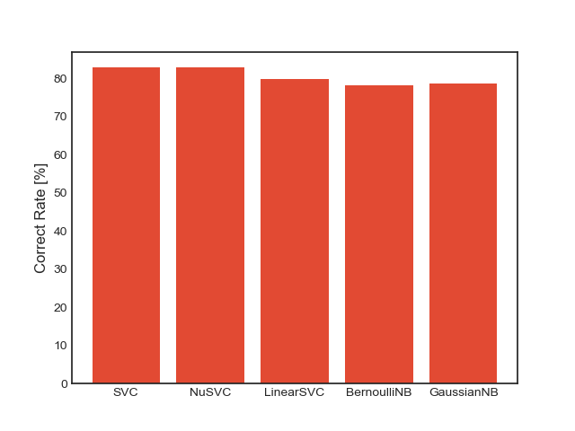
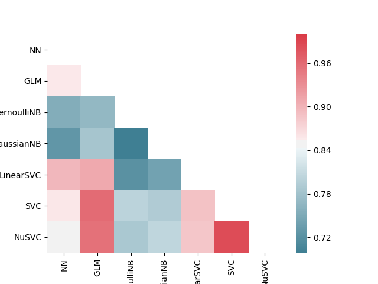

Mon 11 Jun 2018¶
We want to incorporate cabin information into our model. But simply linearly separating the number in cabin code like “A12” into ranges would work well probabily, since “A12” and “B12” may not align vertically. Besides, all cabins on A deck are located in one side of the ship, while cabins of other deck distributed across the ship.
So maybe we will need to hard coded the location information into the model.
I am gonna test against SVC, NuSVC and LinearSVC, BernoulliNB, GaussianNB models.
We are studying this kernel on kaggle which achieved over 82% on test set. It do not consider Cabin variable in its model because there are too many null values (over 77%). So even after we incorporate the Cabin information, at most only about 22% of the predictions will be improved. But we could try incorporating it, maybe.
The data preprocessing, exploration, and visualization and other many steps of the above kernel may be transferred to our report.
About Fusing models¶
If we want to combine individual models to create a super one, we should first plot the correlation heatmap with their predictions. By view their correlation heatmap, we can discover which of them are less correlated. Only little or even not correlated models could form stronger models when they are combined.
Today’s Codings¶
Working Directories: Research/, DataProcessor/
Data Preprocessing¶
Under DataProcessor/ folder, wrote 2 scripts:
- preprocessor.py: Use
preprocess2method to preprocess train.csv and test.csv data file. We filled in the missing data. We addedFamilySize,IsAlone,Title,FareBin,AgeBinthese new features, as mentioned in chapter 5 of this notebook. And output the processed data into Data/ directory, in the name of preprocessed_train.csv and preprocessed_test.csv. - process2.py: Use script basic_process.py to generate cross validation set. Output directory is Data/CrossValidation2/
We will perform cross validation on this preprocessed and feature engineered data set later.
Model Selecting¶
We only tested SVC, NuSVC, LinearSVC, BernoulliNB, GaussianNB against cross validation set, and the whole train-test suite. The scripts is in Research/script04.py.
The cross validation results is as follow (we only show correct rate):
As can be seen, SVC and NuSVC models achieve the best cross validation scores of 82%. While the naive bayes models achieve roughly 78%~79% scores.
Then we gather the predictions of these models, together with XiaoCong’s neural network model’s, YiHao’s GLM model’s, on main test data. And plot their correlation matrix as heatmap, as shown below:
as can be seen, SVC and NuSVC is highly correlated, while naive bayes and neural network is relatively less correlated with other models. This may indicate that they can be incorporate into our ultimate fused model. And we may only need one of SVC and NuSVC models, to save computing resources.
Note: the model correlation visualization procedure is coded in DataProcessor/correlation.py. It load in prediction file in the form of modelname_predict.csv under Data/ folder, and then compute and display their correlation matrix (with only the lower triangle matrix is shown, as correlation matrix is symmetric).
On ModelBase Class¶
We modified ModelBase class so that it can perform both cross validation and main predicting procedures. We renamed run method to run_cv to indicate this is for cross validation. And created run_main method to run main predicting.
You can specify output file name when using run_main. The prediction is output into Data/ directory.
And we made summary method return cross validation statistics.
All modification is coded in Research/model_test2.py.